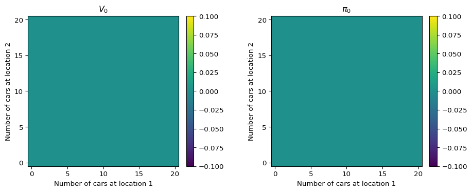
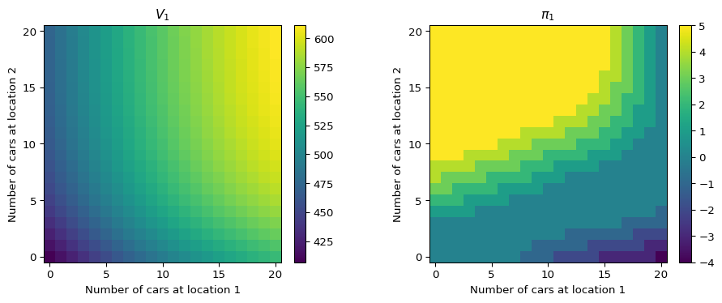
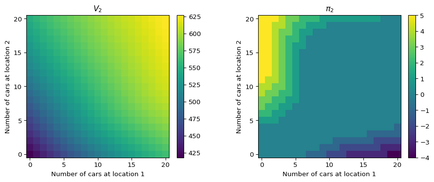
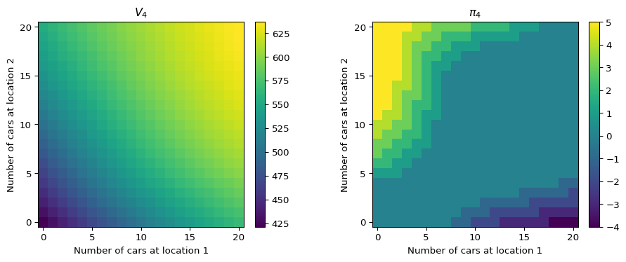
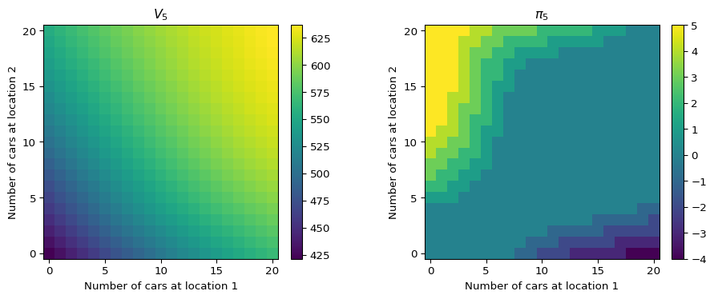

import math
import numpy as np
def poisson_pmf(n: int, mu: float):
"""The Poisson probability mass function.
Args:
n (int): the outcome of the random event.
mu (float): the expected value of the random event.
"""
return (mu**n) / (math.factorial(n)) * math.e ** (-mu)
class Poisson:
def __init__(self, mu: float, upper_n: int = 15):
"""Initialize a new Poisson distribution.
This class caches values from the PMF for all values
of n in the inclusive range [0, upper_n].
Args:
mu (float): the mean parameter.
upper_n (int): the largest outcome we care about to observe.
"""
assert mu > 0, "mu must be a positive number"
assert upper_n >= 0, "n must be a non-negative integer"
self.mu = mu
self.upper_n = upper_n
self.pmf = np.zeros(upper_n + 1)
for n in range(upper_n + 1):
# rely on scipy for PMF implementation
self.pmf[n] = poisson_pmf(n, self.mu)
# if we capture PMF for events [0, upper_n], we will approach
# a sum of 1 as we increase upper_n. the excluded tail contains
# some mass, so we redistribute it to the included mass
self.pmf /= self.pmf.sum()Finite MDPs and Dynamic Programming (RL Part 1)
Notes from Chapters 3 and 4 of Reinforcement Learning: An Introduction and Solutions to Jack’s Car Rental Problem
Introduction
I recently stumbled upon two papers in deep reinforcement learning (DRL): Ha and Schmidhuber (2018) and Hafner et al. (2024), which have resparked my enthusiasm for deep learning, reinforcement learning (RL), and their combination. To capitalize on this, I acquired my own copy of Reinforcement Learning: An Introduction by Sutton and Barto (2018) to read through. The last time I read it was for an undergraduate RL class, and I felt that I needed to brush up on my foundational RL knowledge, diving deep into core theory and intuition, before I jumped into learning more about DRL. I also want to explore doing research in DRL, so it is even more important that I solidify my core competencies.
To help me learn more effectively and practice my own writing skill (which I believe is critical for successful communication in life), I thought it would be a nice idea to jot notes about key takeaways I found in the book and write about them. I also thought it would be both fun and productive to implement some of the example problems/challenges in real code so that I could reinforce the concepts explored in the book and play around with them. That’s what this article is about. I write a little bit about Chapters 3 and 4 from the text and also include a full solution to the Jack’s Car Rental problem using policy iteration and value iteration, two forms of dynamic programming.
I hope this article serves as a good resource for others to learn from; it certainly did for me as I was creating it. 😊
Finite Markov Decision Processes
Sutton and Barto write this about Markov decision processes (MDPs) at the start of Chapter 3:
MDPs are a mathematically idealized form of the reinforcement learning problem for which precise theoretical statements can be made.
I take this definition to mean that MDPs are a framework for us to formally model real-world problems so that we can apply RL methods to solve them. The framework defines two entities: the agent and the environment. The agent learns from and makes decisions on how to interact with the environment, and the environment supplies the agent with (sometimes partial1) information about the current state, as well as rewards (or punishments) for taking certain actions.

The agent-environment interaction loop can be seen in Figure 1. At each timestep \(t\) the agent observes the current state \(s_t \in \cal{S}\) and selects an action \(a_t \in \cal{A}(s_t)\)2 to interact with the environment. In turn, the environment provides the next state \(s_{t+1}\) as well as a scalar reward \(r_{t+1} \in \cal{R} \subset \mathbb{R}\). If we unravel a sequence of interactions between the agent and the environment, we are left with something that looks like the following:
\[ S_0, A_0, R_1, S_1, A_1, R_2, S_2, A_3, \dots \]
This is called a trajectory. In episodic tasks, there is a special terminal state which demarcates the end of a trajectory, or episode. The terminal state is a member of the set \(\cal{S}^+\), which is a superset of \(\cal{S}\). In continous tasks, a trajectory may continue on forever, without limit. In the text, Sutton and Barto use uppercase letters \(S, A\), and \(R\) to represent random variables, and lowercase letters \(s, a\) and \(r\) to represent observed outcomes of those random variables.
We can quantify the return of any trajectory as follows:
\[ G_t = R_{t+1} + \gamma R_{t+2} + \gamma^2 R_{t+3} + \dots = \sum^T_{k=t+1} \gamma^{k-t-1} R_{k} \]
This definition represents the cumulative sum of rewards after time step \(t\). In this definition, we also introduce the concept of a discount rate, a parameter within the range \(0 \leq \gamma \leq 1\), which balances the relative impact of future rewards on the present value of the return. When \(\gamma=1\), we have no discounting on future rewards, and when \(\gamma=0\), we completely throw away future rewards.
Policies and Value Functions
When we are discussing the decision-making ability of an agent, we are referring to that agent’s policy. A policy is a mapping of states to a probability distribution that represents the chances of selecting an action \(a\) from a given state \(s\). We write the policy as \(\pi(a|s)\), which represents the probability of taking action \(a\) from state \(s\). In the case that an agent’s policy is deterministic as opposed to stochastic, we can simply write \(\pi(s)\).
In order to select an optimal policy \(\pi_*\), we must first quantify the quality of policies with respect to their expected returns. This can be accomplished through value functions and action-value functions. The value function \(v_\pi(s)\) quantifies how good it is for an agent to be in a specific state, and the action-value function \(q_\pi(s,a)\) quantifies how good it is for an agent to be in a specific state and select a specific action. Because the return of a trajectory is governed by the policy an agent follows, the value function and action-value function are also defined with respect to a policy. They are defined as follows:
\[ v_\pi(s_t) = \mathbb{E}_\pi\lbrack G_t | S_t = s_t \rbrack \tag{1}\]
\[ q_\pi(s_t, a_t) = \mathbb{E}_\pi\lbrack G_t | S_t = s_t, A_t = a_t \rbrack \tag{2}\]
Bellman Equations
For any policy \(\pi\), the value function \(v_\pi\) has a recursive property in that for any state \(s\), the value function can be defined with respect to its successor states \(s' \in \cal{S}\):
\[ v_\pi(s) = \sum_{a}\pi(a|s) \sum_{s',r}p(s',r|s, a)\lbrack r + \gamma v_\pi(s') \rbrack \tag{3}\]
This equation is referred to as the Bellman equation for the value function, and the corresponding Bellman equation for the action-value function is:
\[ q_\pi(s, a) = \sum_{s',r}p(s',r|s, a)\lbrack r + \gamma \sum_{a'}\pi(a'|s')q_\pi(s',a') \rbrack \tag{4}\]
The function \(p(s',r|s,a)\) represents the probability of transitioning to the next state \(s'\) and receiving a reward \(r\) given that you start in state \(s\) and take action \(a\). This function is known as the dynamics of the MDP.
Both Equation 3 and Equation 4 are both derived from Equation 1 and Equation 2, and the full steps can be found in the text (although they are short and sweet 😊).
Optimal Policies and Value Functions
For finite MDPs, because the state and action spaces are finite, there is a finite number of policies that exist. If we quantify the “score” of each policy \(\pi\) by its value function \(v_\pi(s)\), then it follows that there must exist at least one policy \(\pi_*\) such that \(v_{*}(s)\geq v_\pi(s)\) for all other \(\pi\) and for each \(s \in \cal{S}\). We call this an optimal policy because an agent maximizes their expected return when adhering to it.
The optimal Bellman equations for the value function and action-value function are subtly different from Equation 3 and Equation 4; they are defined as follows:
\[ v_*(s) = \max_{a} \sum_{s',r}p(s',r|s, a)\lbrack r + \gamma v_*(s') \rbrack \tag{5}\]
\[ q_*(s, a) = \sum_{s',r}p(s',r|s, a)\lbrack r + \gamma \max_{a'}q_*(s',a') \rbrack \tag{6}\]
Dynamic Programming
Here is the definition of dynamic programming as posed by Sutton and Barto:
The term dynamic programming (DP) refers to a collection of algorithms that can be used to compute optimal policies given a perfect model of the environment as a Markov decision process (MDP).
Two algorithms explored in the text are policy iteration and value iteration. Both algorithms are used to discover optimal policies in environments where the dynamics are completely known.
Policy Evaluation
Policy evaluation enables us to compute the value function \(v_\pi(s)\) for an arbitrary policy \(\pi\). In iterative policy evaluation, we take Equation 3 and turn it into an update rule to iteratively approximate \(v_\pi(s)\):
\[ v_{k+1}(s) = \sum_{a}\pi(a|s) \sum_{s',r}p(s',r|s, a)\lbrack r + \gamma v_k(s') \rbrack \tag{7}\]
At each iteration, the value \(v_{k+1}(s)\) is assigned to the expectation of the immediate reward conditioned on the policy, and utilizing the previous approximation of the value function \(v_k(s)\) at each successor state \(s'\). After enough iterations, this process converges.
This is called an expected update because it averages out all possible actions rather than relying on a single action from sample data. This is in contrast to other methods further in the text such as Monte Carlo.
The algorithm presented for iterative policy evaluation is as follows (implemented in Python):
def policy_evaluation(V, pi, theta: float = 0.1):
while True:
delta = 0
for s in iter_states():
v = V[s]
V[s] = expected_return(s, a)
delta = max(delta, abs(v - V[s]))
if delta < theta:
breakwhere iter_states() is a helper function to iterate over all possible states, and expected_return(s: State, a: Action) implements Equation 3 to return the value of state s and action a.
Once we have converged to a final value function for the given policy, we may find that the policy is not optimal (in other words, there exists a state such that the policy action does not have the highest expected return). In this case, we may wish to improve our policy such that it is more optimal.
Policy Improvement
Policy improvement is the reverse of policy iteration. We start with a value function \(v_\pi(s)\), and we want to improve our policy such that it is optimal with respect to the given value function. One such way is to just pick a greedy policy that maximizes the expected action-value, given to us by \(v_\pi(s)\). The following equation gives us the optimal policy that is greedy with respect to the current value function:
\[ \pi'(s)=\underset{a}{\text{argmax}} \sum_{s',r} p(s',r|s,a)[r+\gamma v_\pi(s')] \]
This is the version if we used \(q_\pi(s,a)\):
\[ \pi'(s)=\underset{a}{\text{argmax}}\; q_\pi(s,a) \]
And here it is implemented in Python code:
def policy_improvement(V, pi):
policy_stable = True
for s in iter_states():
# store old (action,value) pair
old_a = pi[s]
old_v = expected_return(s, pi[s])
# create accumulator to find max (action,value) pair
best_a, best_v = pi[s], old_v
for a in iter_actions(a):
if a == old_a:
# skip checking the old action, it is our baseline
continue
v = expected_return(s, a)
if v > best_v:
best_a, best_v = a, v
pi[s] = best_a
if pi[s] != old_a:
policy_stable = False
return policy_stablePolicy Iteration
Policy iteration is the process of iteratively cycling back between policy evaluation and policy improvement until we converge to an optimal policy. In finite MDPs this procedure is guaranteed to converge, as each step of policy evaluation and improvement produces a policy more optimal than the last. We stop policy iteration when policy improvement does not change the policy, i.e. it is already greedy w.r.t. the value function.
Value Iteration
Value iteration is similar to policy iteration, except it omits entirely the process of policy improvement. We adjust our policy evaluation method slightly such that we do not rely on any policy \(\pi\). During each iteration over the states, we compute the value function update for each possible action \(a\) rather than just one action selected from our policy, and we pick the highest value. This essentially combines policy evaluation and improvement into one sweep since we are updating our value function in a greedy fashion (selecting action with maximum expected return).
Jack’s Car Rental
Now we’re armed with all of the knowledge we’ll need to solve one of the example problems in the text: Jack’s Car Rental. The original problem statement can be seen in Chapter 4 on page 81 of the text:
Example 4.2: Jack manages two locations for a nationwide car rental company. Each day, some number of customers arrive at each location to rent cars. If Jack has a car available, he rents it out and is credited $10 by the national company. If he is out of cars at that location, then the business is lost. Cars become available for renting the day after they are returned. To help ensure that cars are available where they are needed, Jack can move them between the two locations overnight, at a cost of $2 per car moved. We assume that the number of cars requested and returned at each location are Poisson random variables, meaning that the probability that the number is \(n\) is \(\frac{\lambda^n}{n!}e^{-\lambda}\) where \(\lambda\) is the expected number. Suppose \(\lambda\) is 3 and 4 for rental requests at the first and second locations and 3 and 2 for returns. To simplify the problem slightly, we assume that there can be no more than 20 cars at each location (any additional cars are returned to the nationwide company, and thus disappear from the problem) and a maximum of five cars can be moved from one location to the other in one night. We take the discount rate to be \(\gamma=0.9\) and formulate this as a continuing finite MDP, where the time steps are days, the state is the number of cars at each location at the end of the day, and the actions are the net numbers of cars moved between the two locations overnight.
Poisson Distribution
Before we implement the MDP, it will help us to have a class to represent arbitrary Poisson distributions. In particular, we care about the probability mass function (PMF) which tells us the probability of observing a particular outcome of the random event modeled by the distribution.
The PMF of a Poisson is defined as
\[ P(N=n ; \lambda) = \frac{\lambda^n}{n!}e^{-\lambda} \]
Having the PMF values precomputed and stored in NumPy arrays will help us to write more efficient, vectorized code later on when we implement policy iteration.
MDP Formalization
Next, we can capture relevant parameters from the problem statement as constants in our code and write some helper functions to interact with the state and action spaces of our MDP.
from typing import Sequence
# max number of cars at either location at once
MAX_CARS = 20
# max number of cars that can be moved during the night
MAX_MOVES = 5
# reward (cost) of moving a single car
MOVE_COST = -2
# reward of renting a car
RENT_CREDIT = 10
# MDP discount factor
GAMMA = 0.9
# poisson parameters
POIS_REQ_MU = (3, 4) # expected daily requests at location (1, 2)
POIS_RET_MU = (3, 2) # expected daily returns at location (1, 2)
# lets also instantiate distributions for these parameters
# (take advantage of the class we created earlier)
UPPER_N = 15
POIS_REQ = tuple(map(lambda mu: Poisson(mu, upper_n=UPPER_N), POIS_REQ_MU))
POIS_RET = tuple(map(lambda mu: Poisson(mu, upper_n=UPPER_N), POIS_RET_MU))
State = tuple[int, int]
"""
The MDP state is an (i, j) pair of the number of cars at each location.
"""
Action = int
"""
The MDP action is an integer indicating the movement of cars.
A positive value indicates a flow from the first location to the second.
A negative value indicates a flow from the second location to the first.
A value of zero indicates no movement of cars.
"""
def states() -> Sequence[State]:
"""Return a collection of all possible states.
Returns:
Sequence[State]: a list of all possible (i, j) state pairs.
"""
return [(i, j) for i in range(0, MAX_CARS + 1) for j in range(0, MAX_CARS + 1)]
def actions(state: State) -> Sequence[Action]:
"""Return a collection of all possible actions from the given state.
Args:
state (State): the starting state.
Returns:
Sequence[Action]: a list of all possible (and valid) actions.
"""
# the total number of cars moveable from either location is bounded by:
# - the MAX_MOVES parameter
# - the number of cars at the source location
# - the number of spots at the target location
upper_bound = min(MAX_MOVES, state[0], (MAX_CARS - state[1]))
lower_bound = min(MAX_MOVES, state[1], (MAX_CARS - state[0]))
return range(-lower_bound, upper_bound + 1)Dynamics
The next step is to model the dynamics of the world. From reading the original problem statement above, we know that the environment functions in the following way:
At the end of day \(t-1\), Jack selects an action \(a \in [-5, 5]\), equivalent to the number of cars moving between the first and second locations before day \(t\).
Jack is issued a negative reward of \(-2\cdot|a|\) for moving the cars
We sample four independent random variables from four Poisson distributions defined by the scale parameters \(\lambda\) of the problem statement (\(3\) and \(4\) for requests, and \(3\) and \(2\) for returns at each location respectively).
Jack is issued a positive reward of \(10\cdot\min(\text{\# cars}, \text{\# requests})\)
We subtract the number of requests from the count of cars at each location, and add the number of returns, maxing sure that no count goes above 20 (in this case, cars return to the nationwide company lot).
Wait for Jack’s next action.
When implementing the dynamics in Python, we can take advantage of the fact that the joint probability of our four random variables will never change, so we can compute it once.
# generate all possible observations of four random variables.
observations = np.array(
[
(requests_1, requests_2, returns_1, returns_2)
for requests_1 in range(UPPER_N + 1)
for requests_2 in range(UPPER_N + 1)
for returns_1 in range(UPPER_N + 1)
for returns_2 in range(UPPER_N + 1)
]
).T
# get the probability of each joint observation occuring:
# - product of four independent probabilities
joint_probability = np.array(
[
POIS_REQ[0].pmf.take(observations[0]),
POIS_REQ[1].pmf.take(observations[1]),
POIS_RET[0].pmf.take(observations[2]),
POIS_RET[1].pmf.take(observations[3]),
]
).prod(axis=0)
print(f"Shape of observations:", observations.shape)
print(f"Shape of joint_probability:", joint_probability.shape)Shape of observations: (4, 65536)
Shape of joint_probability: (65536,)Policy Iteration
Here I define a class to hold the individual components of policy iteration, and cycle between them.
class PolicyIteration:
def __init__(self):
self.pi = np.zeros((MAX_CARS + 1, MAX_CARS + 1), dtype=int)
self.V = np.zeros((MAX_CARS + 1, MAX_CARS + 1), dtype=float)
def expected_return(self, state: State, action: Action):
# assign cost for moving cars, this is deterministic
move_reward = MOVE_COST * abs(action)
# get the state of cars after the nightly moves
state_night = (state[0] - action, state[1] + action)
# get the number of orders that are fulfilled
# - observations[0] = requests at location 1
# - observations[1] = requests at location 2
# we are summing over all possible next states (s',r|s,a)
# so we use prior NumPy arrays to help speed up computation
fulfilled = (
np.minimum(state_night[0], observations[0]),
np.minimum(state_night[1], observations[1]),
)
# get the next state after all fulfilled rental requests are
# removed, and returned cars are added back
# - observations[2] = returns at location 1
# - observations[3] = returns at location 2
state_next = (
np.minimum(state_night[0] - fulfilled[0] + observations[2], MAX_CARS),
np.minimum(state_night[1] - fulfilled[1] + observations[3], MAX_CARS),
)
# get reward for each fulfilled rental request
rent_reward = RENT_CREDIT * (fulfilled[0] + fulfilled[1])
# dot product will compute weighed sum of possible stochastic returns
# - weighing is joint probability from prior calculation
expected = move_reward + joint_probability @ (
rent_reward + GAMMA * V[state_next]
)
return expected
def policy_evaluation(self, theta: float = 0.1):
"""Run policy evaluation."""
while True:
delta = 0
for state in states():
v = self.V[state]
# note: asynchronous update
self.V[state] = self.expected_return(state, self.pi[state])
delta = max(delta, abs(v - self.V[state]))
if delta < theta:
return
def policy_improvement(self) -> bool:
"""Run policy improvement."""
policy_stable = True
for state in states():
best_action, best_v = self.pi[state], self.V[state]
for action in actions(state):
if action == self.pi[state]:
continue
v = self.expected_return(state, action)
if v > best_v:
best_action, best_v = action, v
if best_action != self.pi[state]:
policy_stable = False
self.pi[state] = best_action
return policy_stable
def solve(self, max_iter: int = 5):
"""Run policy iteration."""
yield self.pi, self.V
for i in range(1, max_iter + 1):
self.policy_evaluation()
policy_stable = self.policy_improvement()
yield self.pi, self.V
if policy_stable:
returnResults
import matplotlib.pyplot as plt
policy_iteration = PolicyIteration()
for i, (pi, V) in enumerate(policy_iteration.solve()):
fig, axes = plt.subplots(ncols=2, figsize=(10, 4))
# Plot value function V
im0 = axes[0].imshow(V, cmap="viridis")
axes[0].invert_yaxis()
axes[0].set_title(rf"$V_{{{i}}}$")
axes[0].set_xlabel("Number of cars at location 1")
axes[0].set_ylabel("Number of cars at location 2", rotation=90)
nx, ny = V.shape[1], V.shape[0]
axes[0].set_xticks(np.arange(0, nx, 5))
axes[0].set_yticks(np.arange(0, ny, 5))
fig.colorbar(im0, ax=axes[0], orientation="vertical", fraction=0.046, pad=0.04)
# Plot policy pi
im1 = axes[1].imshow(pi, cmap="viridis")
axes[1].invert_yaxis()
axes[1].set_title(rf"$\pi_{{{i}}}$")
axes[1].set_xlabel("Number of cars at location 1")
axes[1].set_ylabel("Number of cars at location 2", rotation=90)
nx2, ny2 = pi.shape[1], pi.shape[0]
axes[1].set_xticks(np.arange(0, nx2, 5))
axes[1].set_yticks(np.arange(0, ny2, 5))
fig.colorbar(im1, ax=axes[1], orientation="vertical", fraction=0.046, pad=0.04)
plt.tight_layout()
plt.show()




It looks like we successfully matched the plots from the text!
References
Ha, D., and J. Schmidhuber. 2018. “World Models.” https://doi.org/10.5281/zenodo.1207631.
Hafner, Danijar, Jurgis Pasukonis, Jimmy Ba, and Timothy Lillicrap. 2024. “Mastering Diverse Domains Through World Models.” https://arxiv.org/abs/2301.04104.
Sutton, Richard S., and Andrew G. Barto. 2018. Reinforcement Learning: An Introduction. Second. The MIT Press. http://incompleteideas.net/book/the-book-2nd.html.
Footnotes
When working with incomplete/partial state knowledge, we refer to Partially observable Markov decision processes (or POMDPs for short).↩︎
We denote the action as \(\cal{A}(s)\) as opposed to \(\cal{A}\) to indicate that the set of actions is dependent upon the current state. For example, we will consider a maze. The state is your position in the maze, and the action is whether you move north, south, east, or west. If you reach a dead end in a maze, that direction will not be available to you, so the set of actions available to you depends on where you are in the maze. When the same set of actions is available at every state, we can use the latter representation as shorthand.↩︎